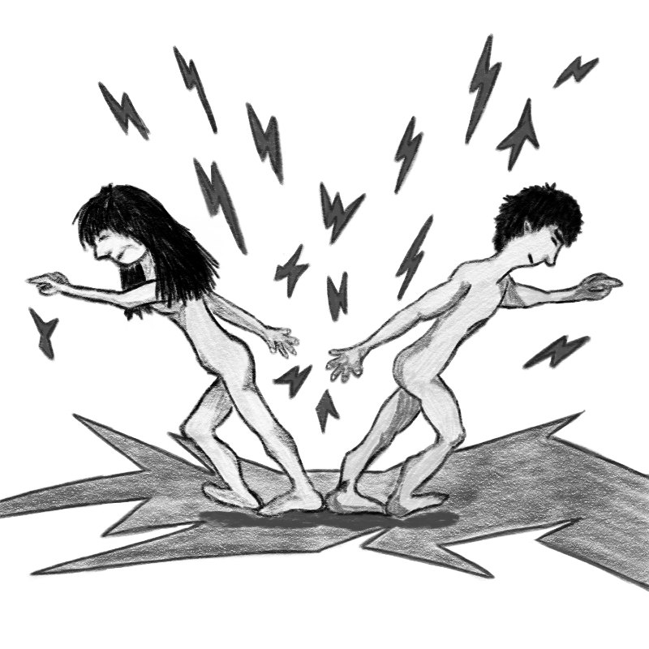

Creacover 2019 : J14
La musique du jour est 泣き出しそうだよ de RADWIMPS feat あいみょん (Aimyon).
Ahhh, Radwimps… :D J’adore ce groupe, même si leur musique est parfois un peu étrange. Je ne sais pas, je trouve qu’il y a quelque chose à l’intérieur qui remue mes émotions. Bizarre. Je voulais mettre Nandemonaiya, la chanson du film Kimi no na wa, mais Diatomée la connaissait déjà (et ne l’aime pas du tout ^^). Alors va pour Nakidashisou da yo, qui m’a permis de découvrir Aimyon par la même occasion. Qu’ils sont sérieux ces japonais…
Cette musique est assez triste. Elle parle de rupture. J’aime son côté symétrique et "géométrique", avec la chorégraphie de la balançoire et la répétition des couplets, légèrement modifiés, mais sonnant toujours de la même manière. J’ai donc voulu représenter quelque chose de très symétrique et de cassé.
